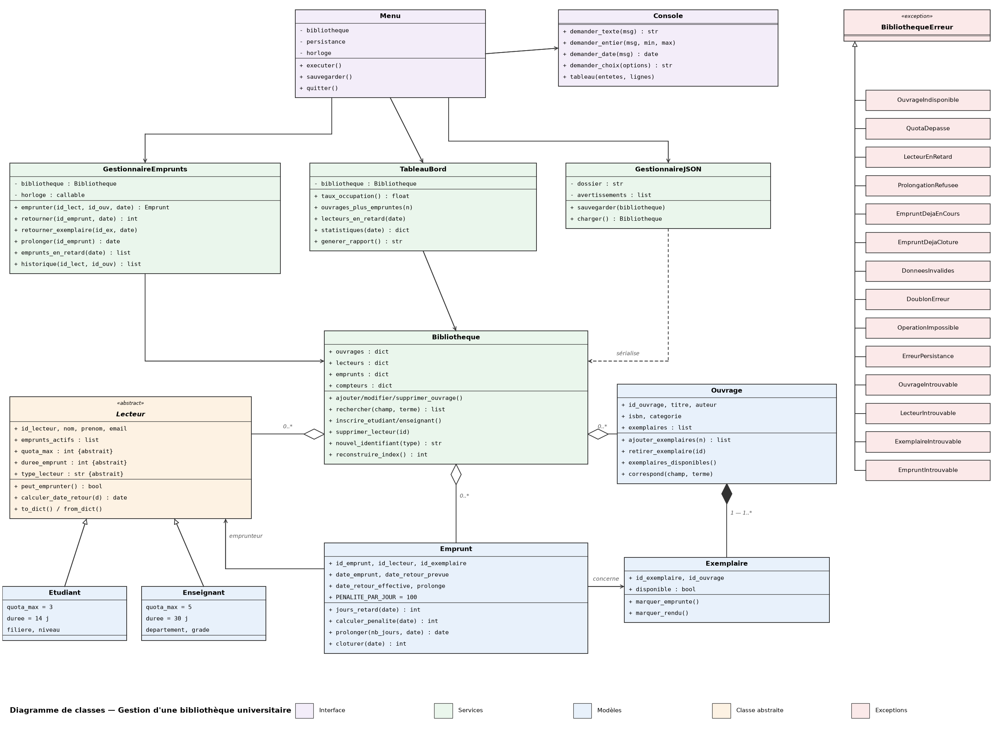

Gestion des prêts d'une bibliothèque universitaire
Ouvrages et exemplaires, étudiants et enseignants, emprunts, retours, prolongations, retards et pénalités, tableau de bord, persistance JSON et menu en console. Bibliothèque standard Python uniquement, aucune dépendance.
Fonctionnalités
Ouvrages
Ajout, modification, suppression. Recherche par titre, auteur, catégorie ou ISBN. Plusieurs exemplaires par ouvrage, disponibilité de chaque copie, clé ISBN vérifiée.
Lecteurs
Classe abstraite Lecteur et sous-classes Etudiant et
Enseignant : chaque type applique ses propres règles par polymorphisme.
Prêts
Emprunt avec contrôle de la disponibilité, du quota, des retards et des doublons ; retour, prolongation unique, pénalité de 100 FCFA par jour de retard.
Tableau de bord
Ouvrages les plus empruntés, lecteurs en retard, exemplaires disponibles et empruntés, taux d'occupation du fonds, pénalités en cours.
Persistance JSON
Sauvegarde automatique, écriture atomique, copie de sécurité .bak,
fichiers corrompus mis de côté et restaurés, identifiants et historique conservés.
Interface console
Menu en 9 entrées, saisies contrôlées (nombres, dates, ISBN), confirmation des suppressions, sauvegarde même en cas d'interruption.
Règles de gestion
| Règle | Étudiant | Enseignant |
|---|---|---|
| Emprunts simultanés maximum | 3 | 5 |
| Durée d'un emprunt | 14 jours | 30 jours |
| Prolongation | une fois, 14 jours | une fois, 30 jours |
| Pénalité de retard | 100 FCFA / jour | 100 FCFA / jour |
Le jour de l'échéance n'est pas compté en retard. Un lecteur en retard ne peut plus emprunter, et un prêt en retard ne peut pas être prolongé. Taux d'occupation = exemplaires empruntés / total des exemplaires × 100.
Architecture et diagramme de classes
Modèles
Ouvrage, Exemplaire,
Lecteur, Etudiant, Enseignant, Emprunt
Services
Bibliotheque,
GestionnaireEmprunts, TableauBord
Persistance et interface
GestionnaireJSON,
Menu, Console

Cliquer pour agrandir. Source Mermaid : diagramme_classes.md.
Tests
| Module | Tests | Contenu |
|---|---|---|
test_ouvrages.py | 18 | création, ISBN, recherches, exemplaires |
test_lecteurs.py | 10 | classe abstraite, héritage, polymorphisme, quotas |
test_emprunts.py | 20 | quotas, indisponibilité, retards, prolongation, pénalités |
test_persistence.py | 7 | sauvegarde, fichiers absents ou corrompus |
test_tableau_bord.py | 7 | indicateurs, menu piloté par saisies simulées |
| Total | 62 | OK |
Essayer l'application
Dans le navigateur, sans installation : le bouton ci-dessous ouvre un GitHub Codespace (compte GitHub requis). Le terminal lance le menu automatiquement ; sinon tapez
Ouvrir dans Codespacespython main.py.Sur votre ordinateur (Python 3.10 ou plus récent) :
git clone https://github.com/marcelalle-dev/mini-projet-1-bibliotheque-universitaire.git cd mini-projet-1-bibliotheque-universitaire python main.py python -m unittest discover -s tests -t .Données de démonstration à la date du jour :
python scripts/generer_donnees_demo.py --force